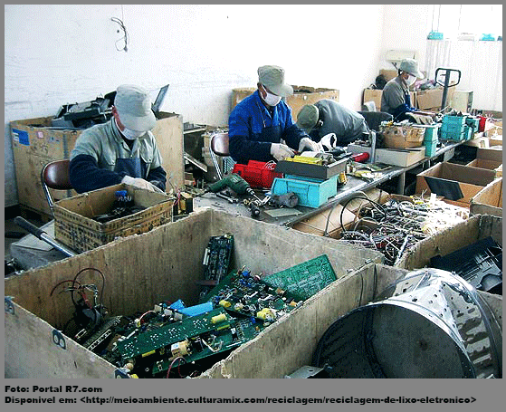
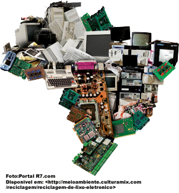

O que e Lixo Eletônico(REEE)?
Resíduos de Equipamentos Elétricos e Eletrônicos (REEE). Este é um termo usado para se referir a todos os equipamentos elétricos e eletrônicos, suas partes e assessórios, que foram descartados pelo seu proprietário como resíduos, sem a intenção de reutilizá-los. São também chamados de Lixo Eletrônico. Esse tipo de resíduo se transformou em problema global na última década e a tendência é que sua importância seja ainda maior nos próximos anos. Com o crescimento da indústria de eletroeletrônicos e o ciclo de vida reduzido desses equipamentos, torna-se urgente a necessidade de dar uma destinação adequada a estes resíduos.
Exemplo de Materiais
- Monitores de Computadores;
- Telefones Celulares e baterias;
- Computadores;
- Televisores;
- Câmeras Fotográficas;
- Impressoras;
- Entre outros.
Porque lixo Eletrônico e um problema?
Uma vez que representam um tipo de resíduo que tem crescido continuamente no mundo. Estima-se que, em 2018, foram geradas 50 milhões de toneladas de lixo eletronico em todo o mundo e não há sinais de diminuição da geração deste tipo de resíduo no curto prazo.
Ao contrário, cada vez mais vemos nossa sociedade baseada no uso destes equipamentos, os quais, mais cedo ou mais tarde, serão descartados.
De acordo com dados identificados em um estudo realizado pela Universidade das Nações Unidas em conjunto
com a União Internacional das Telecomunicações, somente em 2017 foram gerados 44,7 milhões de toneladas
desse tipo de resíduo em todo o mundo, sendo que até 2021 esse número deve crescer 17%.
vazio
vazio
Reciclagem de Lixo Eletrônico
Estatísticas apontam que cerca de 50 milhões de toneladas de lixo eletrônico são produzidos anualmente em todo o mundo, sendo que 10 milhões são reciclados na China. No entanto, vale notar que esse processo pode ser realizado pela exploração de pessoas, até mesmo de crianças e idosos. Um exemplo notório dessa exploração bem como do excesso de lixo eletrônico produzido no mundo é a cidade de Guiyu, na China, donde milhares de pessoas trabalham separando esses resíduos.
Esse processo pode ser altamente perigoso para os seres humanos que o realizam visto os elementos presentes nesse tipo de lixo, ou seja, metais pesados e radioativos. Estudos apontam que o solo e os cursos de água da região já estão contaminados pelos produtos eletrônicos. Com o aumento da globalização e da tecnologia, novos aparelhos eletrônicos são lançados em curto espaço de tempo, o que leva as pessoas a trocarem seus aparelhos mesmo que ainda estejam funcionando. Para exemplificar melhor, dados apontam que nos Estados Unidos, cerca de 300 milhões de aparelhos eletrônicos são descartados anualmente sendo que seis em cada dez deles ainda em condições perfeitas de funcionamento. De tal modo, o que pode parecer um simples ato de consumo, esse tipo de ação tem grande impacto no meio ambiente, como a poluição do solo, da água e do ar.
Lixo Eletrônico no Brasil
No Brasil, o aumento da comercialização de produtos eletrônicos nas últimas décadas tem gerado grande problemas ambientais como a poluição do meio ambiente. Entre os países subdesenvolvidos, o Brasil é o país que mais gera lixo eletrônico no mundo. A Lei Estadual nº 13.576, de 6 de julho de 2009, institui normas e procedimentos para a reciclagem, gerenciamento e destinação final de lixo tecnológico: “Artigo 1º - Os produtos e os componentes eletroeletrônicos considerados lixo tecnológico devem receber destinação final adequada que não provoque danos ou impactos negativos ao meio ambiente e à sociedade. Parágrafo único - A responsabilidade pela destinação final é solidária entre as empresas que produzam, comercializem ou importem produtos e componentes eletroeletrônicos.” Dados da Pnuma (Programa da ONU para o Meio Ambiente) apontam que o Brasil descarta anualmente cerca de 97 mil toneladas métricas de computadores; 2,2 mil toneladas de celulares; e 17,2 mil toneladas de impressoras. Em 2014, a ONU (Organização das Nações Unidas) declarou que o Brasil produziu 1,4 milhão de toneladas de lixo eletrônico. Esses valores são assustadores e, portanto, devemos nos conscientizar de seus danos e começar a ter uma postura ética e responsável com o descarte correto dos produtos eletrônicos, sejam os fabricantes ou os consumidores. Campanhas de conscientização precisam ser promovidas de modo a alertar a população mundial da importância da separação desses e de outros tipos de lixo com o descarte correto. Ainda que nem todas as cidades do Brasil realizem a coleta e reciclagem do lixo eletrônico, atualmente cerca de 720 cidades apresentam esse serviço. No entanto, o país ainda está longe de conseguir coletar esses materiais em larga escala.
Como descartar os Resíduos Eletrônicos?
Há diversas formas de descartar o aparelho que não presta mais. Agora iremos te mostrar algumas maneiras que possa lhe auxiliar quando necessitar realizr o descarte de seu Lixo Eletrônico.
- Devolver ao FabricanteHoje, grandes empresas fabricantes de produtos de informática, como por exemplo, Dell, Epson, Apple e outras já possuem sistemas de coleta de e-lixo residencial. Fácil e rápido, o sistema popularizado em países desenvolvidos está se tornando comum por aqui também Através dele você liga ou manda um e-mail e a empresa vai até sua residência buscar o produto “velho”.
- Apple - Oferece código para envio gratuito de qualquer produto pelos Correios. Pedidos pelo 0800-7723126 ou pelo e-mail applecs@oxil.com.br
- Dell - Recolhe produtos em todo o país, com agendamento pelo site, Clique aqui.
- Epson – Para reciclar cartuchos da marca, veja este link.
- HP - Cartuchos podem ser descartados nas lojas da marca e nas redes Kalunga ou Saraiva de sua cidade. Para outros equipamentos, envie pedido pelo e-mail reciclagem@hp.com
- Itautec – Para saber como proceder com a reciclagem de produtos desta marca, clique aqui.
- Lenovo - Informa o melhor local para a coleta pelo SAC no 0800-8850500 ou reciclar@lenovo.com
- LG – Informações de como enviar seus materiais velhos e pontos de coleta por estado podem ser encontrados aqui.
- Motorola – As condições para o descarte Eco-moto podem ser conferidas aqui.
- Sony - A Sony coleta pilhas e baterias em postos autorizados ou nas lojas da marca. Instruções no site.
- Samsung - Eletrônicos e cartuchos são retirados pela empresa em casa com agendamento e info pelo site.
- Positivo - Há um SAC com informações sobre a reciclagem e postos de coleta mais próximos no recicle@positivo.com.br e nos telefones 4002-6440 (São Paulo, Curitiba, Belo Horizonte e Brasília) e 0800-6447500 (outros locais).
Além disso, todas as operadoras de celular têm coleta de baterias e aparelhos em suas milhares de revendas espalhadas pelo Brasil.
Se você acha que seu computador ainda está em bom estado e pode ser utilizado por outras pessoas, pode doá-lo a alguma instituição de caridade, Ong ou até mesmo museus. A instituição receptora irá formatar sua máquina, fazer alguns pequenos ajsutes e outras pessoas irão usufruir daquilo que já não lhe serve mais, bacana, hein? Confira as instituições que fazem este serviço: Associação Brasileira de Distribuição de Excedentes A Abre é uma entidade sem fins lucrativos fundada em 2004 que identifica instituições sem fins lucrativos que possam absorver materiais excedentes de qualquer tipo e em qualquer quantidade. Em outras palavras, a Abre faz o meio de campo entre quem quer doar e quem está precisando receber. Para ver se alguém está precisando daquele seu monitor de tubo antigo, por exemplo, confira a página da associação clicando aqui,, ou então mande um e-mail para abre.sp@uol.com.br